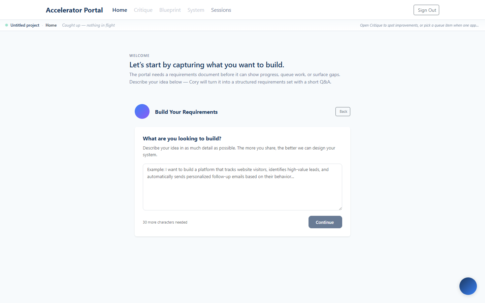

ali+demo@colaberry.com | |
| Display name | Ali Demo Before Reqs |
| Enrollment ID | e1d9cacd-53b1-41ac-92a1-97ed48165efc |
| Project | none yet — auto-created on first requirements save |
| Requirements | 0 (clean slate) |
| Capabilities | 0 (clean slate) |
| Portal token expires | 2026-05-30 (10 days) |
The portal uses passwordless magic-link auth. This account has a live token; the link below logs you in directly.
Open in a fresh browser (or incognito):
https://enterprise.colaberry.ai/portal/verify?token=f513f18e-4c84-4876-b7f9-49021f94a910
Token is reusable until expiry — bookmark the link if you need to revisit.
After the magic link verifies, the portal sets a 7-day cookie and routes you to /portal/home. Because this account has no project yet, Home recognizes "first-run" state and embeds the requirements builder inline — no empty 0% dashboard, no misleading "you're caught up" message.
Top nav: Home is active in primary blue. Critique / Blueprint / System are grayed out — they're not useful until requirements exist. Hover any disabled tab for the tooltip "Add a requirements document on Home first."

Type into the textarea — a real description of what you want to build. The Continue button is gated until your idea is at least 30 characters long; until then the helper text reads "30 more characters needed."
Example seed: "A small-business CRM that automatically tags leads by industry, routes hot ones to a single owner, and emails a weekly digest of pipeline health."
Behind the scenes: POST /api/portal/project/requirements/expand-questions sends your idea to gpt-4o-mini, which derives 6–10 capability questions tailored to it.
You'll see one question at a time with three buttons:
Progress bar and "Question N of M" counter run along the top. You can use Back to revise previous answers before generation starts.
All answers are captured client-side and stored in localStorage so you can close the tab + come back. Nothing persists server-side until Phase 3 finishes.
After the last question, the page enters Generating Requirements. The progress bar walks four stages: Generating Requirements → Creating Document Outline → Expanding Sections → Refining & Polishing. Each stage updates the progress percentage and a short status line.
Backend: POST /api/portal/project/requirements/generate returns a job_id; the page polls every ~3 seconds for progress + the final document.
You land on Ready for Review. The full requirements doc renders — sections, numbered requirements, success criteria. Two actions:
Once you click Save, the next page render detects stage === 'has_requirements' and the embedded builder swaps out for the regular Cory Home dashboard. The disabled top-nav tabs unlock: Blueprint and System become clickable. (Critique stays disabled until a frontend route exists — that's the next stage.)
All of this is driven by GET /api/portal/onboarding/state, which returns { stage, gates }. The hook useOnboardingState() on the home page + nav layout reads it and branches.
The screenshot at step 1 is the actual rendered home for this account, taken by scripts/captureFirstRunOnboarding.js just before this doc was written. The headless harness:
docs/screenshots/<date>-firstrun-v2/REPORT.htmlIf this doc ever drifts from reality, the fix is to re-run node scripts/captureFirstRunOnboarding.js and replace the screenshot.
Tell me and I'll run the cleanup SQL on prod:
DELETE FROM requirements_maps WHERE project_id = (SELECT id FROM projects WHERE enrollment_id = 'e1d9cacd-53b1-41ac-92a1-97ed48165efc'); DELETE FROM features WHERE project_id = (SELECT id FROM projects WHERE enrollment_id = 'e1d9cacd-53b1-41ac-92a1-97ed48165efc'); DELETE FROM capabilities WHERE project_id = (SELECT id FROM projects WHERE enrollment_id = 'e1d9cacd-53b1-41ac-92a1-97ed48165efc'); DELETE FROM projects WHERE enrollment_id = 'e1d9cacd-53b1-41ac-92a1-97ed48165efc'; -- Enrollment row stays — project auto-created on next save.
| When | Endpoint | Purpose |
|---|---|---|
| Magic link click | GET /api/portal/verify?token=… | Issues a 7-day JWT cookie |
| Home mount | GET /api/portal/onboarding/state | Returns stage + gates so home knows whether to embed builder or dashboard |
| After idea submit | POST /api/portal/project/requirements/expand-questions | LLM generates dynamic questions |
| After last question | POST /api/portal/project/requirements/generate | Async multi-pass generation; returns job_id |
| During generation | GET /api/portal/project/requirements/job/:id | Polled every ~3s for progress + final doc |
| On Save | POST /api/portal/project/setup/requirements | Persists doc; auto-creates project; parses into requirements |
Open the magic link in a fresh browser, watch Home render the builder, and run through phases 1–6.
scripts/captureFirstRunOnboarding.js. Source screenshots: docs/screenshots/2026-05-20-firstrun-v2/.